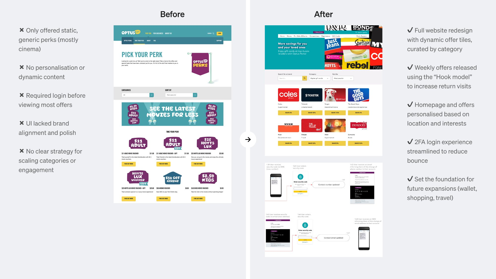
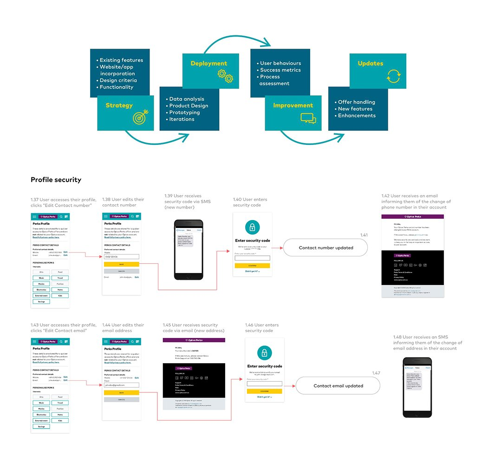
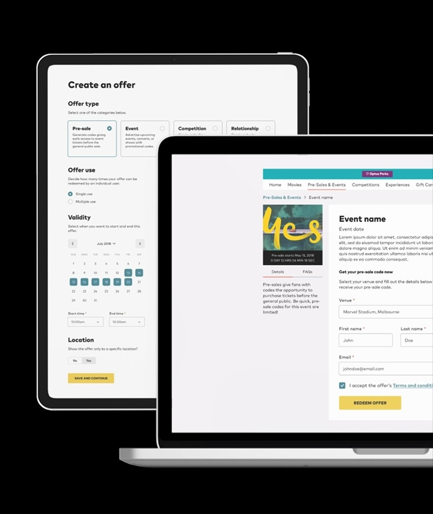
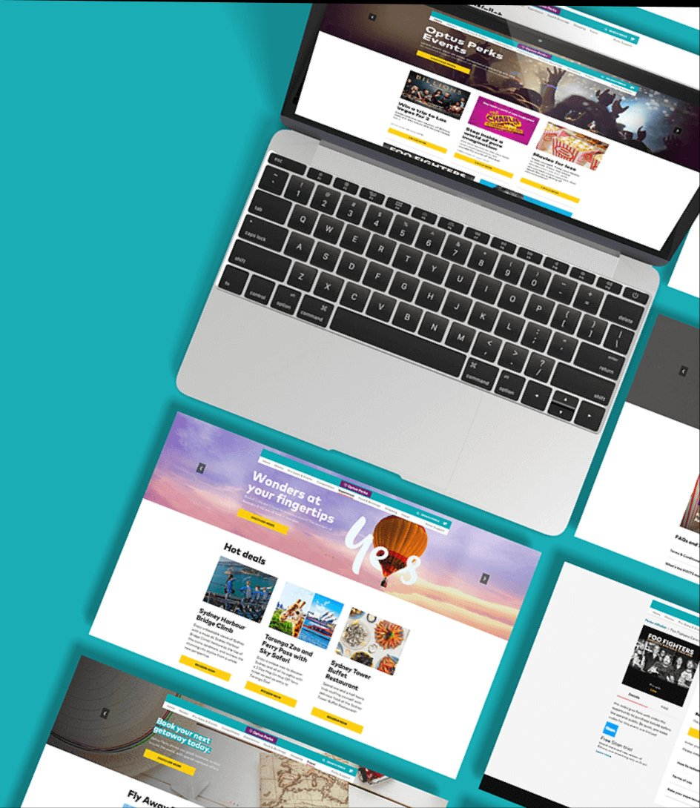
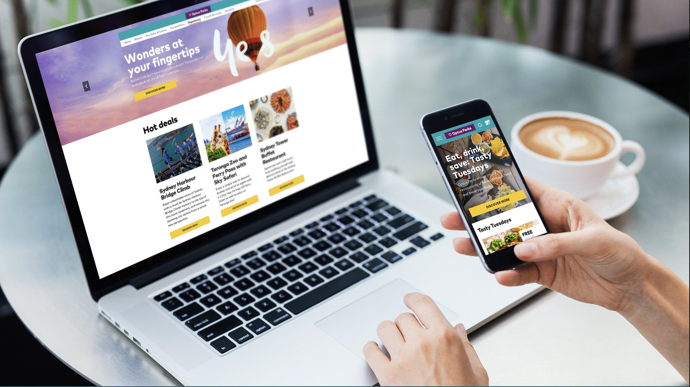
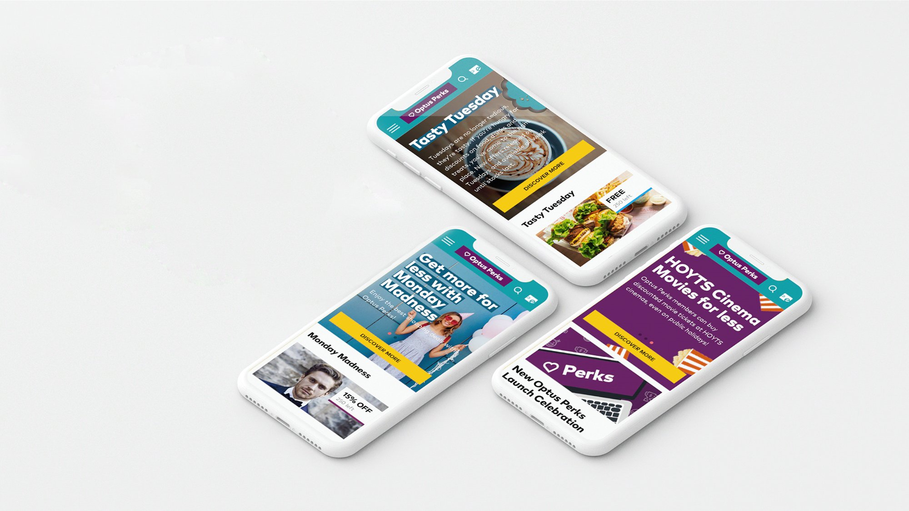
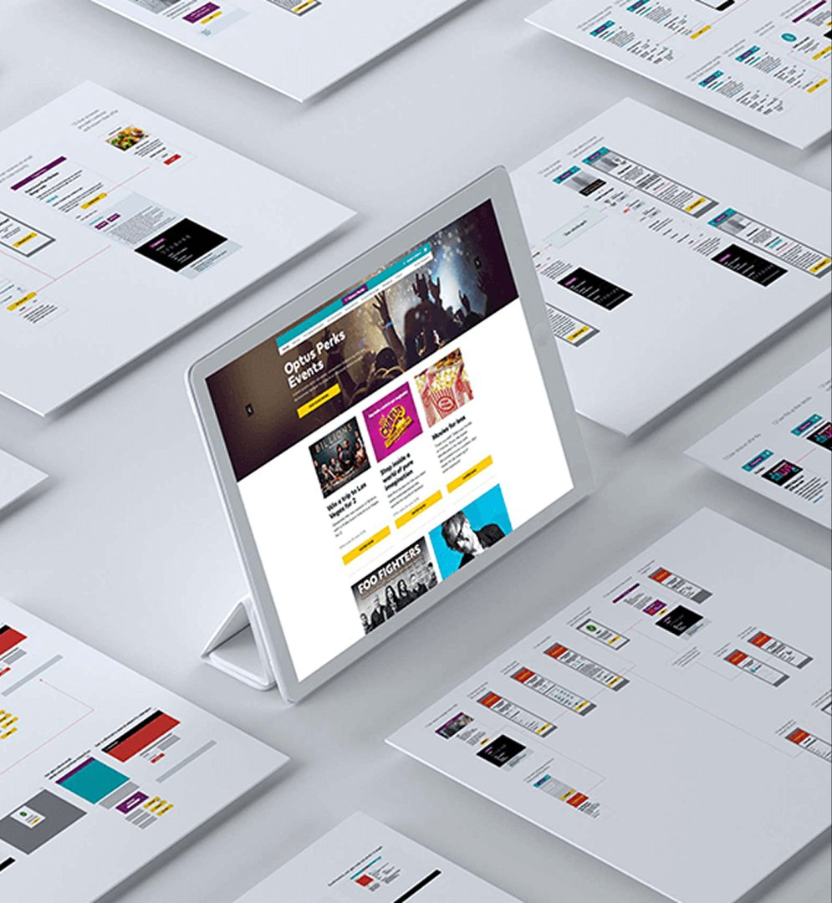

Full ownership of the Optus Perks platform: delivering a branded, scalable solution while solving urgent issues and laying the foundation for future growth. Three entry points (My Optus App, the Optus website, and marketing emails), 2FA compliance, and a 2-week MVP window to unblock a full month of development.
Product DesignDesign StrategyWeb DesignDesign Systems
My role
Lead designer, end-to-end
Team
PM, Optus stakeholders, engineering
MVP delivery
10 days from brief to handoff
The challenge
Optus's existing rewards platform was almost entirely static: a page of cinema vouchers with little personalisation, no dynamic content and a UI that was visually misaligned with the brand. Customer engagement was low and the platform couldn't support the loyalty strategy Optus wanted to execute.
With a brand refresh underway and a tight engineering timeline, Optus needed a new platform designed, documented and handed off in under two weeks.


End-to-end design process: from strategy and deployment cycles to detailed interaction flows for profile security and 2FA.Before: static cinema vouchers with no brand alignment. After: dynamic, categorised offer tiles with personalisation and weekly content.
What I did
1
Defined the content architectureDesigned an offer taxonomy that could scale from cinema into dining, travel, shopping and experiences: each category with its own visual identity while sharing a consistent container system.
2
Designed the consumer-facing platformBuilt a fully responsive site with a dynamic homepage (weekly rotating offers, personalised by location), category browsing, offer detail pages and a streamlined redemption flow. Applied the "Hook model" to weekly offer cadence to drive return visits.
3
Designed the internal admin toolBuilt a merchant offer management interface that let the Optus team create, configure, schedule and target offers without engineering involvement: including offer types, redemption limits, location targeting and date ranges.
4
Streamlined authenticationRedesigned the login flow using two-factor authentication to reduce bounce while keeping account security strong. The old flow required login before customers could view any offers: a significant barrier we removed.
5
Delivered the design systemCreated a component library and design documentation that gave engineering the foundation to build and iterate without going back to design for every new offer type or page.

The internal offer creation tool: configurable offer types, targeting, validity and location settings
Key design decisions
Weekly offers as habit engine. Changing the offer inventory every week gave customers a reason to return regularly. The "Hook model" structure (trigger → action → reward → investment) was deliberately applied to the homepage layout and notification strategy.
Browse before login. Moving the authentication gate to the point of redemption rather than browsing was a significant structural decision that immediately increased the number of customers who experienced the value of the platform.
Admin tool as a product in its own right. The Optus marketing team needed to be able to manage the platform themselves. Designing the admin tool as a real product: not an afterthought: meant engineering could focus on the consumer experience rather than internal tooling workarounds.

Responsive design: consistent experience from desktop to mobile

The launch campaign: "Wonders at your fingertips": dynamic hero with editorial offer photography


Component library and design documentation across all breakpoints.The mobile experience: weekly campaigns (Tasty Tuesdays, Monday Madness) drove repeat engagement
Outcomes
10Days from brief to engineering handoff for the MVP
5+Offer categories designed and scoped for phased rollout
→Platform foundation used for dining, travel and wallet expansion